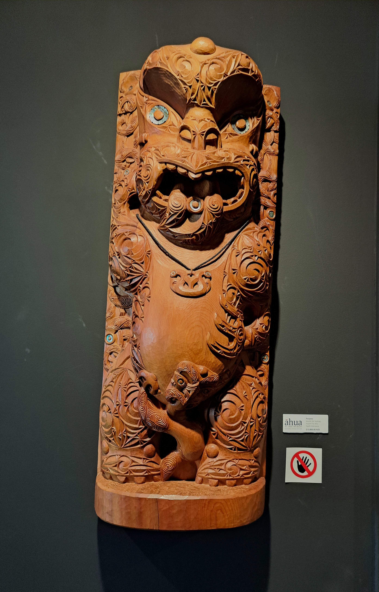

Mud Pool
Experience the active geothermal boiling mud pools bubbling at high temperatures.

Geysers
Home to the famous Pōhutu Geyser, erupting naturally throughout the day.

Weaved Bags
Traditional Māori flax weaving crafted at Te Rito o Rotowhio school.

Carving
Master wood and bone carving traditions preserved by NZMACI artists.